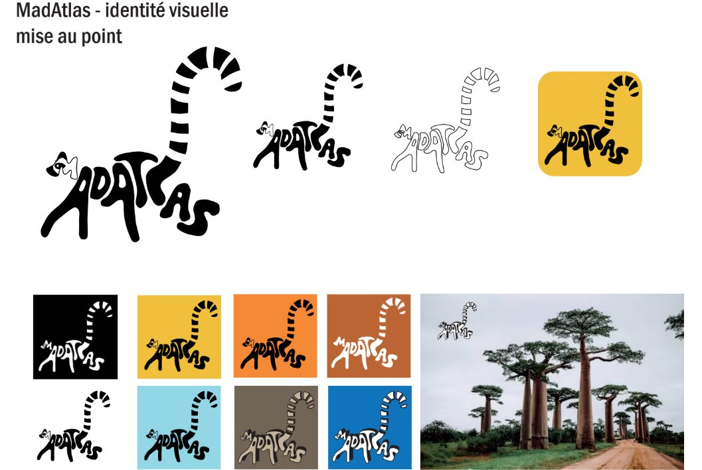

Dans le cadre d'un projet universitaire pour MadAtlas, j'ai conçu un logo profondément ancré dans l'identité de Madagascar. J'ai choisi de mettre en avant le lémurien, animal représentatif et emblème de l'île. Ce clin d'œil direct à la faune malgache célèbre sa biodiversité unique tout en créant un lien authentique avec la région. Un design pensé pour rapprocher le projet de son écosystème et de ses racines.
